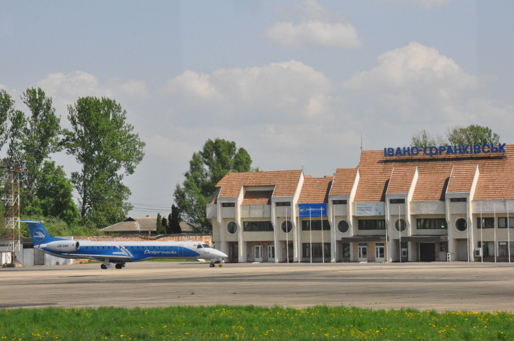
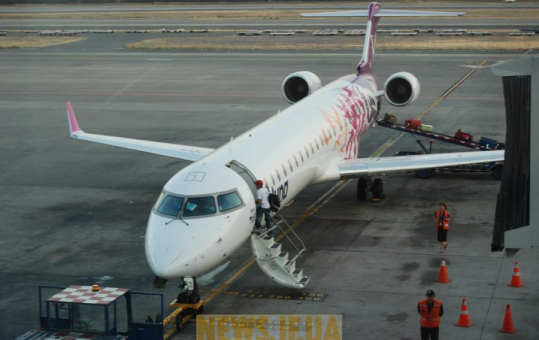
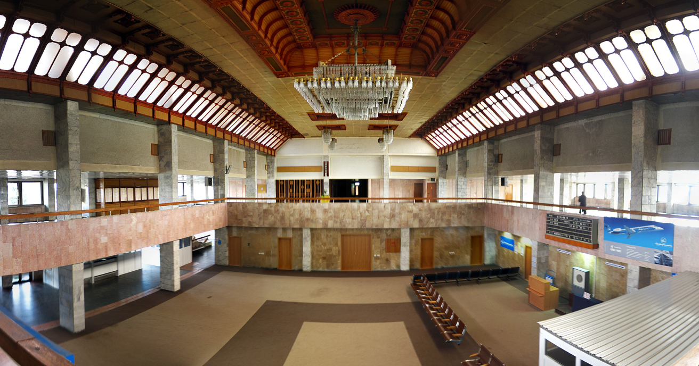
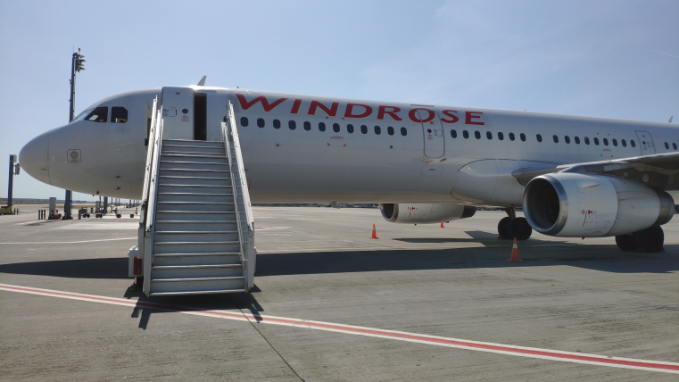
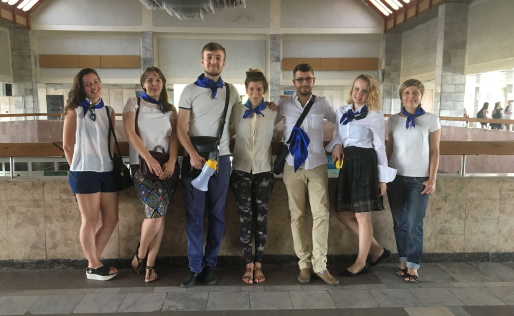
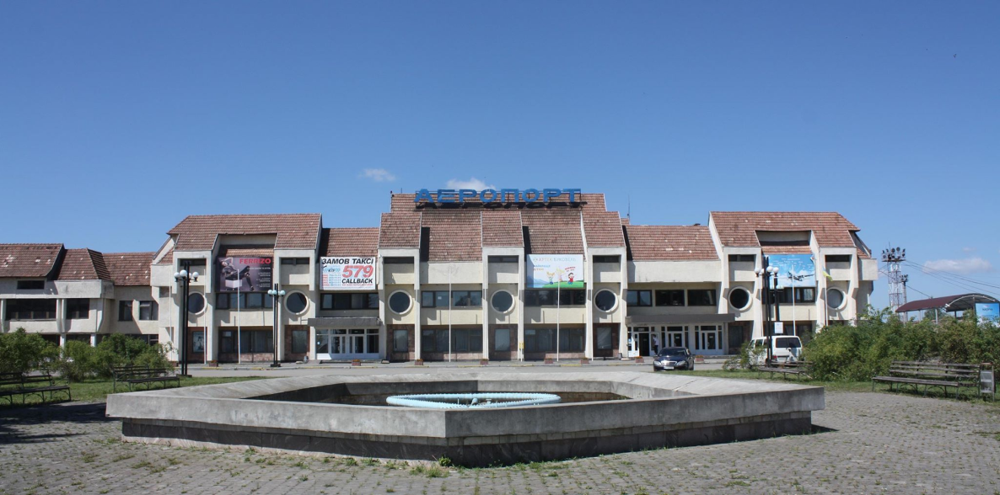

ІСТОРІЯ
Історія повітряних перевезень на Прикарпатті починаєтся 1959 року коли відбувся перший пасажирський рейс за маршрутом "Станіслав-Москва".
Через три роки, у 1962, в місті з'явився перший аеровокзал, а 1992 року аеропорт "Івано-Франківськ" отримує статус міжнародного.
1962 — На південній околиці міста, в селі Опришівці збудоване нове приміщення аеропорту, яке повністю перебудоване в 1990 р.
1990 25 грудня — введена в дію штучна злітно-посадкова смуга аеропорту, що дало можливість приймати літаки першого класу.
22 травня 1993 року — в Івано-Франківському аеропорту вперше приземлився пасажирський літак «Боїнг-737», відкрито першу міжнародну авіалінію Івано-Франківськ—Манчестер (Великобританія).
У березні 2010 ТзОВ «Скорзонера» виграла право на концесію аеропорту терміном на 30 років.
ФАКТИ
- 1975 — Івано-Франківський аеропорт надав послуги 210.000 пасажирів; 1983 ― здано в експлуатацію поточний аеровокзал у «псевдогуцульському стилі»;
- 1981-82 ― здано в експлуатацію сучасну споруду аеровокзалу. За інформацією Тамари Медведик, яка займалася проктними роботами та оплатою, проектував Київський інститут «Аеропроект», ГАПом був Маримуха. Будувало споруду СУ-53 Минмонтажспецстрой.
- 1990 25 грудня — введена в дію штучна злітно-посадкова смуга аеропорту, що дало можливість приймати літаки першого класу.
- 22 травня 1993 року — в Івано-Франківському аеропорту вперше приземлився пасажирський літак «Боїнг-737», відкрито першу міжнародну авіалінію Івано-Франківськ ― Манчестер (Велика Британія).
- 2010 1 червня ― підписання договору про концесію з ТзОВ «Скорзонера» та Івано-Франківською ОДА терміном на 30 років.
- Початок 2010-х рр. На замовлення концесіонера ІФ філія Діпромісто виконало проект з приводу реконструкції приміщень терміналу (опалення, встановлення крісел тощо).
- 2015. В жовтні Дніпроавіа відкрило новий рейс на Відень.
- 30 березня 2016 року. Новий рейс до Стамбулу.
- 24/26 червня 2016 МАУ відкрила сезонні рейси в Іспанію (Аліканте і Валенсія).
ФОТОГАЛЕРЕЯ





